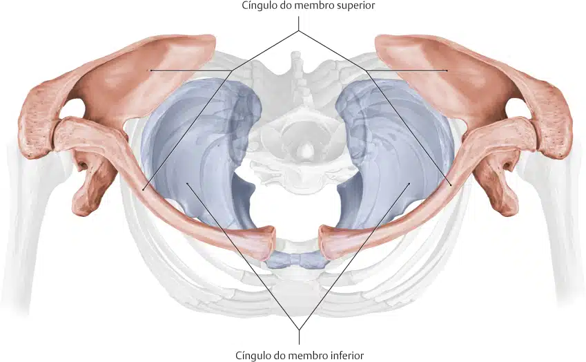
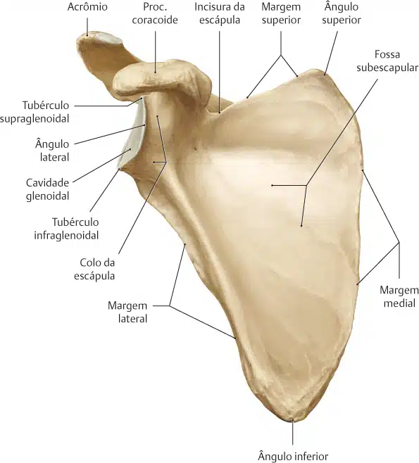
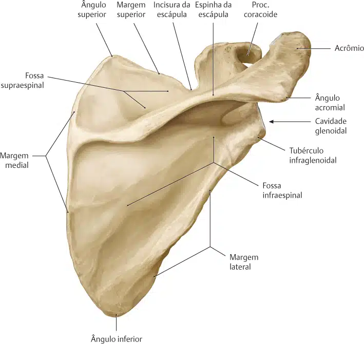
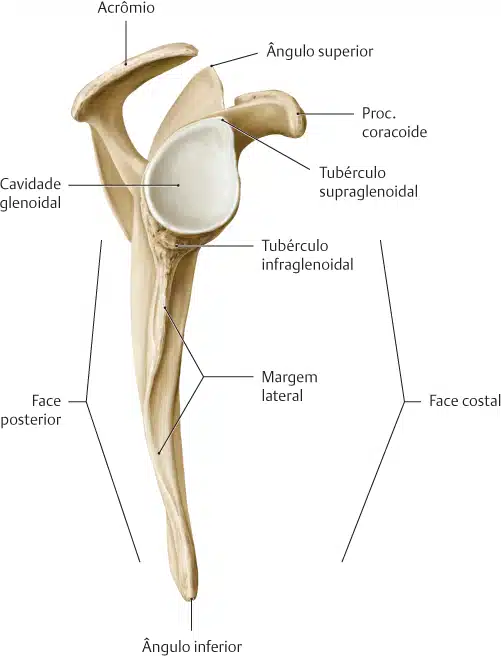
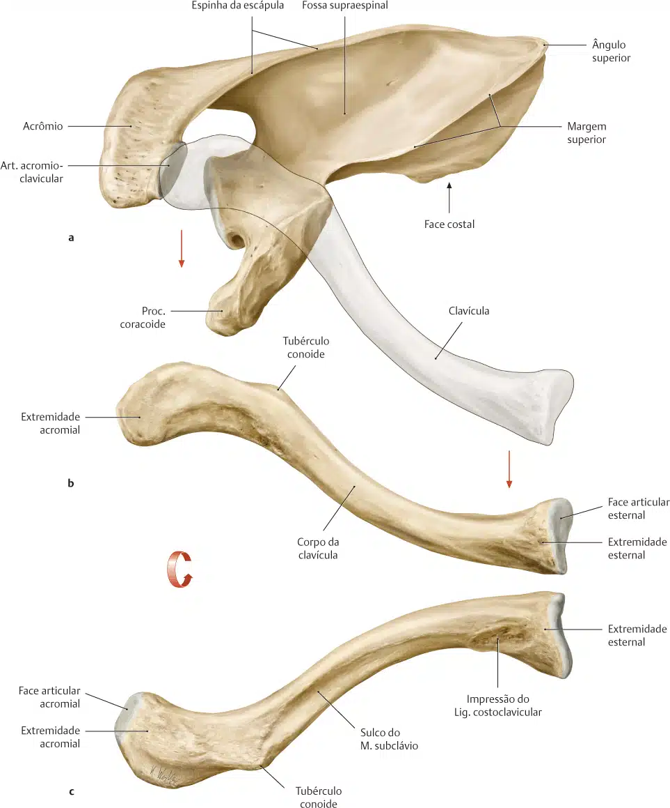

O cíngulo do membro superior consiste em dois ossos: a clavícula e a escápula.
A função da clavícula e da escápula é servir como um elo entre cada membro superior e o tronco ou esqueleto axial.
Anteriormente, o cíngulo do membro superior se conecta ao tronco na porção superior do esterno; entretanto, posteriormente, essa conexão é incompleta porque a escápula está ligada ao tronco somente por músculos.

A escápula é um osso laminar que apresenta um corpo triangular com duas formações bem salientes, a espinha (que termina lateralmente no acrômio) e o processo coracóide.
Observe num esqueleto articulado que a face anterior do corpo adapta-se à curvatura posterior da caixa torácica e por esta razão é côncava e denominada face costal (por sua relação de proximidade com as costelas).
A figura permite reconhecer sem dificuldade:
A margem medial;
A margem lateral;
A margem superior;
O acrômio (que se articula com a clavícula);
O processo coracóide;
O ângulo superior;
E o ângulo inferior.
Um terceiro ângulo, o lateral, corresponde na verdade ao ponto de junção das bordas lateral e superior.
Neste ponto ele se espessa para formar a cabeça da escápula, a qual se acha unida ao resto da escápula pelo colo.



Note que a face lateral da cabeça forma a cavidade glenóide, côncava, rasa e que recebe a cabeça do úmero.
Não é raro que as escápulas manuseadas pelos estudantes apresentem-se roturas no corpo: como a escápula é um osso laminar muito fino, estas roturas podem ocorrer no processo de preparação da peça.
Quando íntegra, a face costal, também conhecida como fossa subescapular, pode apresentar várias cristas não muito elevadas que servem à fixação do m. subescapular.
A clavícula é um osso alongado com uma curvatura dupla que tem três partes principais: duas extremidades e uma porção central longa.
A extremidade lateral ou acromial da clavícula se articula com o acrômio da escápula.
Essa articulação é chamada acromioclavicular e geralmente pode ser palpada com facilidade.
A extremidade medial ou esternal articula-se com o manúbrio, que é a parte superior do esterno.
Essa articulação é chamada esternoclavicular e também é facilmente palpada.
A combinação das articulações esternoclaviculares de cada lado do manúbrio ajuda a constituir uma importante referência anatômica de posicionamento chamada incisura jugular ou furcula esternal.
O corpo (diáfise) da clavícula é a porção alongada entre as duas extremidades:
A extremidade acromial da clavícula é achatada e tem uma curvatura para baixo em sua fixação no acrômio.
A extremidade esternal tem formato mais triangular e é direcionada para baixo para articular-se com o esterno.
Em geral, o tamanho e o formato da clavícula diferem em homens e mulheres.
A clavícula feminina geralmente é mais curta e menos curva que a masculina.
A clavícula no homem tende a ser mais espessa e mais curva.
Geralmente, esta última característica é mais evidente em homens muito musculosos.

No tubérculo conóide prende-se o ligamento conóide.
E estendendo-se lateral e anteriormente, identifica-se uma área rugosa, a linha trapezóidea, onde se fixa o ligamento trapezóide.